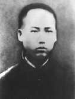
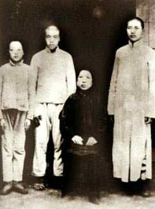
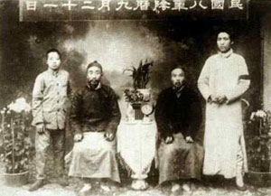
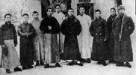

1911年
春，到长沙，考入湘乡驻省中学读书。期间，读到同盟会办的《民立报》，受其影响，撰文表示拥护孙中山及同盟会的纲领。
|  |
1913年在湖南省立第
四师范学校预科读书 |
10月，响应辛亥革命，投笔从戎，在湖南新军当列兵。半年后退出。
 |
1919年春，毛泽东与母亲文氏、弟弟毛泽民（左二）、毛泽覃在长沙合影。 |
1913年
春，入湖南省立第四师范学校预科读书。
1914年
秋，编入湖南省立第一师范学校本科第八班。在校期间，受杨昌济等进步教师的影响，成为《新青年》杂志的热心读者，崇拜陈独秀、胡适。
1918年
4月14日，同萧子升、何叔衡、蔡和森等发起成立新民学会。
6月，在湖南省立第一师范学校毕业。
8月，为组织湖南赴法勤工俭学运动第一次到北京。在北京期间，担任北京大学图书馆管理员，得到李大钊等人帮助，开始接受俄国十月革命的思想影响。
 |
1919年11月，与父亲毛贻昌(左二)、堂伯父毛福生(右二)和弟弟毛泽覃在长沙。 |
1919年
4月6日，从上海回到长沙。
5月，响应五四运动，发起成立湖南学生联合会，领导湖南学生反帝爱国运动。
7月14日，主编的湖南学生联合会会刊《湘江评论》在长沙创刊。7月至8月，连续撰写并发表《民众的大联合》长文。
10月5日，母亲文氏病逝，闻迅从长沙赶回韶山。8日，在母亲灵前写成《祭母文》。
12月，为领导驱逐湖南军阀张敬尧的运动，第二次到北京。在京期间，读到《共产党宣言》等马克思主义书籍。
1920年
 |
1920年，毛泽东（左四）与进步团体
“辅社”同人在北京陶然亭合影。 |
5、6月间，在上海会见陈独秀，同他讨论读过的马克思主义书籍等问题。
8月初，同易礼容等在长沙发起成立文化书社，传播马克思主义和新文化。
8月至9月，参加筹备成立俄罗斯研究会。
11月25日，致信罗章龙，提出新民学会，“要变为主义的结合才好。主义譬如一面旗子，旗子立起了，大家才有所指望，才知所趋赴”。
11月，同何叔衡等组织长沙共产主义小组。
12月1日，致信给蔡和森、萧子升和其他在法会友。信中表明自己接受马克思主义，走俄国十月革命的道路。
同月，在长沙筹建社会主义青年团。
冬，同杨开慧结婚。 |